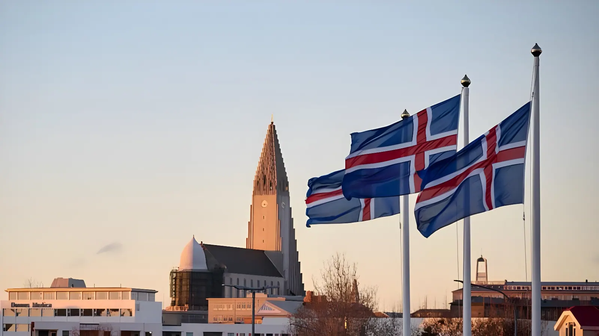

Le 29 août 2026, les 400 000 Islandais seront appelés à répondre à une question simple mais lourde de conséquences : les négociations d'adhésion à l'Union européenne doivent-elles reprendre ? Onze ans après le retrait officiel de la candidature, un gouvernement de centre-gauche pari sur ce référendum pour trancher une question qui divise profondément le pays. Entre souveraineté jalousement gardée, pêche comme enjeu identitaire et contexte géopolitique radicalement reconfiguré, l'Islande se trouve à un tournant de son histoire.
L'histoire islandaise avec l'Union européenne commence dans la tourmente. En juillet 2009, durement frappée par l'effondrement de son système bancaire lors de la crise financière mondiale, l'Islande dépose officiellement sa candidature à l'adhésion. Les négociations s'ouvrent en juillet 2010 et progressent rapidement : 27 des 35 chapitres de l'acquis communautaire sont ouverts, dont 11 clôturés en seulement trois ans. Mais les élections législatives d'avril 2013 bouleversent la donne. La gauche pro-européenne est balayée ; le nouveau gouvernement, dominé par le Parti de l'Indépendance et le Parti du Progrès, tous deux eurosceptiques, gèle immédiatement le processus.
Le 12 mars 2015, le retrait de la candidature devient officiel. L'économie islandaise s'est entre-temps redressée avec une vigueur surprenante — sans l'aide de Bruxelles —, renforçant l'argument des souverainistes : l'Islande n'a pas besoin de l'UE pour prospérer. Pendant une décennie, la question européenne reste délibérément mise sous cloche.
Les élections législatives du 30 novembre 2024 marquent un tournant. L'Alliance sociale-démocrate, conduite par Kristrún Frostadóttir, s'impose comme le premier parti du pays. Le 21 décembre 2024, elle forme un gouvernement de coalition avec le Parti libéral réformiste (Viðreisn) et le Parti populaire — ce dernier étant opposé à l'adhésion. Face à ces divergences internes, la coalition s'accorde sur un compromis : laisser les citoyens trancher par référendum.
Le 25 février 2026, la Première ministre Frostadóttir annonce lors d'une conférence de presse conjointe avec le Premier ministre polonais Donald Tusk, à Varsovie, que le référendum aura lieu dans les mois à venir. Le 6 mars, la ministre des Affaires étrangères Þorgerður Katrín Gunnarsdóttir précise la date : le 29 août 2026. Le Parlement islandais — l'Althingi — valide la résolution par 34 voix pour, 8 contre et 14 abstentions.
« Nous estimons que, précisément en ce moment, l'Islande est suffisamment forte, sur le plan économique mais aussi en tant que nation sûre d'elle-même, pour pouvoir prendre cette décision. »
— Kristrún Frostadóttir, Première ministre islandaise, mars 2026Crise financière dévastatrice : effondrement du système bancaire, économie au bord de la faillite. L'Islande dépose sa candidature à l'UE en juillet 2009, portée par la social-démocratie.
Négociations actives : 27 chapitres ouverts sur 35, 11 clôturés. La question de la pêche et de la souveraineté bloque l'avancée des chapitres les plus sensibles.
Défaite électorale de la gauche. Le nouveau gouvernement eurosceptique gèle aussitôt les négociations. Le redressement économique rapide de l'Islande réduit l'attrait de l'adhésion.
Retrait officiel de la candidature. La question européenne disparaît de l'agenda politique pendant une décennie.
Victoire de l'Alliance sociale-démocrate aux élections législatives. Formation d'un gouvernement de coalition qui s'engage à organiser un référendum avant 2027.
Annonce officielle du référendum pour le 29 août 2026. L'Althingi valide la résolution à une large majorité. La Commission européenne salue la démarche.
Si l'adhésion à l'UE est relativement simple à envisager dans de nombreux domaines — l'Islande est déjà membre de l'Espace économique européen depuis 1994 et de Schengen depuis 2001, alignée sur une grande partie de l'acquis communautaire —, la question de la pêche constitue un obstacle d'une tout autre nature. L'Islande exerce un contrôle exclusif sur sa zone économique exclusive de 200 milles nautiques, l'une des plus riches de l'Atlantique Nord. Ce droit souverain est indissociable de l'identité nationale, héritier de la mémoire des « Guerres de la Morue » opposant l'Islande au Royaume-Uni au cours du XXe siècle.
La Politique commune de la pêche (PCP) de l'UE implique un partage des décisions sur les ressources halieutiques entre États membres. Pour les communautés de pêcheurs islandais — en particulier dans les régions rurales —, c'est une ligne rouge. Même les partisans d'une adhésion reconnaissent que la pêche sera le chapitre le plus difficile à négocier. Les opposants au référendum arguent que l'obtention d'une dérogation durable est « irréaliste », et que le « oui » du 29 août conduirait inévitablement à céder une part de la souveraineté sur cette ressource vitale.
Ce qui distingue le référendum de 2026 des débats passés, c'est le contexte géopolitique radicalement transformé. Le retour de Donald Trump à la Maison-Blanche et ses menaces répétées d'annexer le Groenland — archipel voisin situé entre l'Islande et les États-Unis — ont mis en lumière la vulnérabilité des petites nations de l'Arctique face aux grandes puissances. La Première ministre Frostadóttir a explicitement cité cette pression comme l'une des raisons ayant accéléré le calendrier référendaire, initialement prévu d'ici fin 2027.
Dans ce contexte, l'adhésion à l'UE est présentée par ses partisans non plus seulement comme une opportunité économique, mais comme une garantie de sécurité et d'ancrage géopolitique. La Commission européenne a accueilli favorablement l'annonce du référendum. La commissaire à l'Élargissement, Marta Kos, a estimé qu'une « décision importante » attendait le peuple islandais.
« Une décision importante attend le peuple islandais. »
— Marta Kos, commissaire européenne à l'Élargissement, mars 2026Les sondages reflètent une société divisée. Selon une enquête du Grand Continent publiée en mars 2026, environ 57 % des Islandais seraient favorables à la reprise des négociations. Mais un sondage de la télévision publique RÚV publié début février montre une opinion plus équilibrée, avec les partisans et les opposants à l'adhésion quasiment à égalité. Les jeunes urbains de Reykjavík penchent davantage vers le « oui » ; les communautés rurales de pêcheurs restent profondément attachées au statu quo.
La campagne référendaire est également marquée par des inquiétudes sur les ingérences extérieures et la désinformation. La Première ministre a publiquement averti que toute influence étrangère — qu'elle vienne de l'UE, de la Russie, de la Chine ou des États-Unis — sera considérée comme inacceptable. La présidente Halla Tómasdóttir a, quant à elle, alerté sur les risques que font peser les outils d'intelligence artificielle dans un petit marché médiatique comme celui de l'Islande.
La question posée le 29 août est soigneusement calibrée : « L'Islande doit-elle reprendre les négociations d'adhésion avec l'Union européenne ? » Un « oui » ne signifie pas l'adhésion immédiate, mais seulement la réouverture du dossier. Si les négociations aboutissent à un accord, un second référendum sera organisé pour que les citoyens tranchent sur l'adhésion elle-même. Cette procédure en deux étapes est conçue pour rassurer les sceptiques : voter « oui » en août, c'est accepter d'explorer les conditions d'une adhésion, pas signer un chèque en blanc à Bruxelles.
Reste que certains juristes et la Commission électorale nationale ont relevé une ambiguïté dans le libellé : parler de « reprendre » les négociations suppose qu'elles n'ont jamais été officiellement clôturées, ce qui fait débat depuis le retrait de 2015. Le gouvernement a néanmoins maintenu la date et la formulation.
Un vote favorable le 29 août relancerait les négociations d'adhésion suspendues depuis 2013. L'Islande part d'une position favorable : déjà intégrée au marché unique via l'EEE, déjà dans Schengen, sans les problèmes de corruption ou de recul démocratique associés à certains candidats balkaniques. Mais les chapitres les plus sensibles n'avaient pas été clôturés lors du précédent cycle : agriculture, pêche, politique monétaire (adoption éventuelle de l'euro) et souveraineté sur les ressources naturelles restent à négocier. Ce sont précisément ces sujets qui cristallisent les résistances les plus profondes dans la société islandaise. Le 29 août n'est pas une fin — c'est le début d'un long débat.